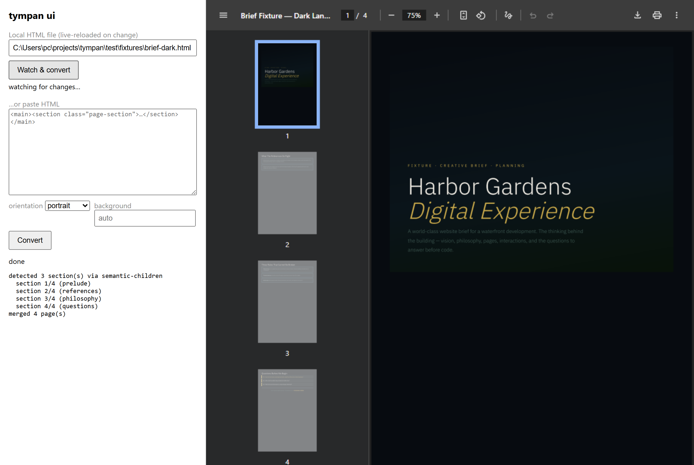

HTML to PDF, counted
Print AI-made HTML without the stray pages.
tympan turns a single-file HTML document into a PDF with one section per page, then counts the pages before it says it is done.
$ npx tympan brief.htmlOpen source, MIT. Needs Node 20 or newer and a Chromium (npx playwright install chromium).
deck.html · 4 sections · a script injects print CSS on load, as AI bundles do
- p1cover
- p2 · stray linecover spills over
- p3market
- p4financials
- p5risks
- p6 · orphanfooter alone
- p1cover
- p2market
- p3financials
- p4risks + footer
Real output, nothing retouched. The same deck.html printed with Playwright's page.pdf() (A4, backgrounds on) and with tympan 0.7.0, on the same Chromium.
What it does
Built for the HTML your assistant hands you.
Those files are one long page with a script that rewrites the print CSS at load. Browsers obey it. tympan does not.
One section, one page
Sections are found in the rendered page and printed one at a time. If a section is too big, the scale shrinks until it fits, so a late-loading font cannot sneak a sliver page past it.
Your page, not a white sheet
The cover becomes page 1, the footer lands on the last page, and your page background, dark or light, is carried over to the margins.
Same input, same bytes
Fixed metadata and an input-derived document ID make identical input and options produce identical files. A test converts a real 8-page document twice and compares the hashes.
Fails loudly
The page count and an optional last-page text probe are checked after printing. Any mismatch exits non-zero, so CI stops instead of shipping a bad PDF.
Text stays selectable and links stay clickable. The PDF carries real metadata, and --outline adds a bookmarks panel with one entry per section.
$ npx tympan deck.html tympan: 4 section(s) via page-section-class tympan: section 1/4 (cover) tympan: section 2/4 (market) tympan: section 3/4 (financials) tympan: section 4/4 (risks) tympan: merged 4 page(s) deck.pdf: 4/4 pages tympan: wrote deck.pdf
The receipt
It tells you how it decided.
Every run says which strategy found your sections, prints each one as it goes, and ends with the page count it expected against the page count it got.
That is the real output from the demo above, with the file paths shortened.
tympan ui
See the cut before you print.
Point it at a file, save in your editor, and the paginated PDF redraws beside you. It shows which strategy found your sections and how many pages came out.

Try it on your file
Count your sections before you install anything.
Drop an HTML file and this page runs a simplified version of tympan's section detection. It reads the file in your browser, nothing is uploaded, and it does not run your scripts.
Fit
When another tool is the better pick.
tympan is a command you run yourself. It does one job, and the tools below do others.
- A hosted API with uptime and invoicesDocRaptor, PDFShift, html2pdf.app. You send HTML, they render it and bill you.
- A service your backend can call over HTTPGotenberg. A Docker image with a Chromium endpoint and other converters behind one API.
- Print-first typesetting from clean, script-free CSSWeasyPrint or Prince. They follow your print CSS, which is what you want when you wrote it.
- One long page with no breaks you care aboutPlaywright's page.pdf(). Plain Chromium printing is fine.
- AI-generated HTML that has to come out as one section per page, checkedtympan. It prints each section on its own page and checks the count.
Shipped
All in 0.8.0.
Slide decks fit one section per page. Long prose does not, because a short section cannot fill a sheet. Everything this case needed has now shipped.
--flowLet Chromium paginate a whole prose document instead of one section per sheet, so pages fill.
tympan lintNamed findings for a bad-looking PDF, such as a sparse page or an image that never loaded; --a11y appraises the source the same way.
tympan previewOne sheet per detected section, shown before you convert, with how much of the sheet it fills.
tympan testPixel fingerprints for every page, so a dropped background or a lost figure fails a test.
Convert one file. Read the receipt.
$ npx tympan brief.html